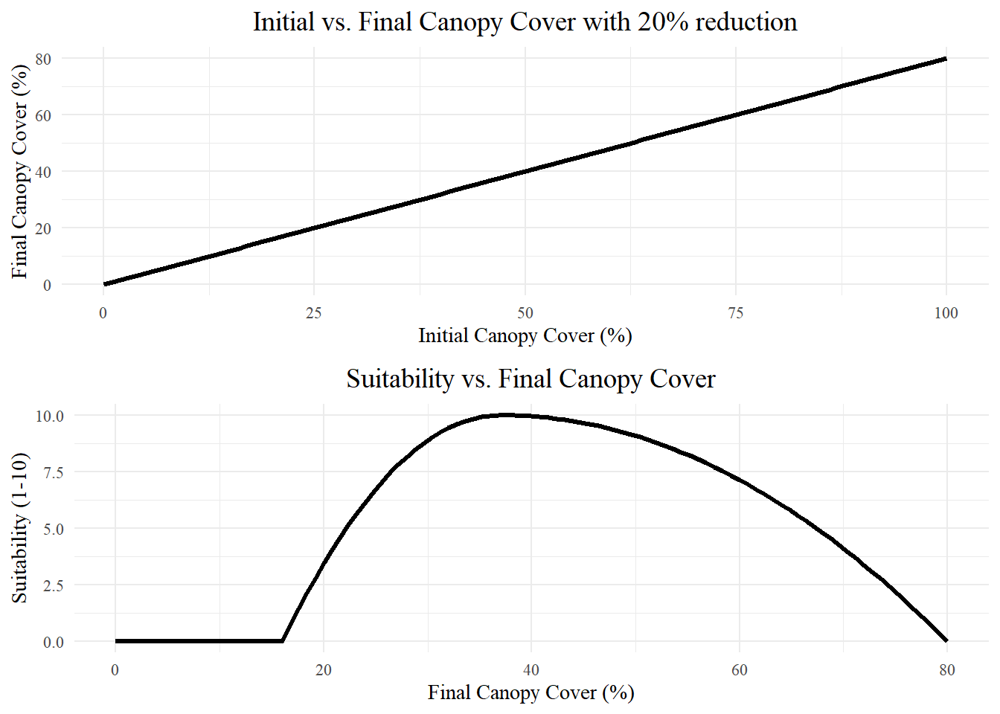

Scraps
The connection between forests and water supplies is well documented. Around 65% of surface water in the western states originates from forested lands, which cover just 29% of the land area [@brown_source_2005]. The average annual precipitation in the Lower Colorado River Basin is about 330 \(mm\), and only about 10 \(mm\) of that precipitation becomes streamflow, while much of the rest is lost to evapotranspiration [@zou_streamflow_2010]. Regional studies have found that up to 90% of annual precipitation in semi-arid forests is lost evapotranspiration [@dore_recovery_2012; @ha_evapotranspiration_2015; @yaseef_ecohydrology_2010; @hibbert1979]. Sublimation has been shown to remove 10 - 90% of snowfall in the Colorado River Basin, while the remaining snowmelt provides over 80% of streamflow to the Colorado River [@lundquist_sublimation_2024]. Over half of streamflow from the Upper Colorado River basin comes from groundwater sources primarily recharged by snowmelt [@miller2016]. Therefore, small reductions in evaporative losses could have out-sized impacts on available water supplies, particularly enhancing groundwater recharge in terrains underlain by karst lithology [@hibbert1979; @wyatt2013].
** Papers on how thinning works primarily in snow-dominated systems**
This research aims to develop criteria for areas suitable for thinning to enhance groundwater recharge. It focuses primarily on regional studies to determine suitability criteria, which are likely the best predictor of hydrologic response to treatment [@wyatt_estimating_2013].
Regional Hydrologic Responses to Treatment
Several regional studies link forest treatment to changes in stand-level ecohydrology, including increased tree growth in Ponderosa Pines greater soil moisture and total ecosystem moisture leading to increased drought resilience [@sankey_regionalscale_2021; @sankey_thinning_2022], increased snow retention [@broxton_subseasonal_2023; @belmonte2021], greater streamflow [@baker_effects_1986], water table rise \[Denver et al in Prep \][@smerdon_overview_2009][@schenk_impacts_2020] and increased springflow [@schenk_impacts_2020]\[Hart prarie and hoxworth in prep\].
Water Yield/Runoff
Several regional studies link forest treatment to increased streamflow [@dwivedi_how_2024; @biederman_streamflow_2022; @broxton_subseasonal_2023]. However, there appears to be a threshold response, with water yield increasing only in treated forests receiving over 500mm of annual precipitation or in snow-dominated forests [@biederman_streamflow_2022; @carroll_evaluating_2016; @adams_ecohydrological_2012; @zou_streamflow_2010; @hibbert1979].
Soil Moisture and Drought Resilience
A synthesis of several treatment types across Northern Arizona, including thinning at various levels and prescribed burning, found that treated sites had significantly greater total ecosystem moisture, making forests more resilient to drought[@sankey_regionalscale_2021; @sankey_thinning_2022]. Treatments were shown to increase tree growth, improving resilience to drought in Ponderosa Pine forests[@rodman2024]. Thinned Ponderosa Pine forests have higher soil moisture for two to eight years post-thinning, a result also found in semi-arid forests around the Mediterranean [@belmonte_soil_2022; @del_campo_global_2022; @odonnell_vegetation_2021; @del_campo_effectiveness_2019].
Justification
regional studies are the best predictor of hydrologic response to thinning in Arizona forests [@wyatt_estimating_2013]
A snythesis of all 4FRI treatments found that thinned and burned forests have signifiantly greater total ecosystem moisture and are thus more resilient to drought and wildfire [@sankey_regionalscale_2021]
Thinned forests are better buffered against drought impacts in terms of both soil moisture and tree health [@sankey_thinning_2022].
Soil moisture and ET may be affected by thinning for 3.6 - 8.6 years [@del_campo_global_2022].
Prescribed burning or thinning can increase tree growth, improving resilience to drought in ponderosa pine forests [@rodman2024].
Thinned forests (around Flagstaff) have higher soil moisture at 25 and 50cm in the first two years post-thinning [@belmonte_soil_2022].
Thinning in semi-arid forests around the Mediterranean increased antecedent soil moisture and below ground hydrologic processes and increased deep soil moisture by 50mm/year over the control [@del_campo_effectiveness_2019].
a review of 35 studies published from 1971 to 2018 found that thinning was more effective than clear-cutting in terms of increasing groundwater recharge due to reduced sublimation and evaporation. Springs can effectively monitor groundwater recharge effects in arid lands [@schenk_impacts_2020].
A review of studies on forest mgmt effects on groundwater resources found that a rise in the water table can generally be expected following forest thinning in all forested landscapes [@smerdon_overview_2009].
Snow retention
The effects of forest thinning and subsequent snowmelt are highly variable, with responses depending on forest structure and local climate, where thinning in dense and taller vegetation generally increases snow retention, thinning in shorter, less dense forests may decrease retention [@lewis_prediction_2023].
In semi-arid forested watersheds, thinning can influence streamflow variability by modifying snowpack accumulation and melt, particularly in wetter years where thinning can either reduce or increase snow retention based on site-specific conditions.[@broxton_subseasonal_2023].
Thinning in semi-arid forested watersheds can significantly impact streamflow by altering snowmelt timing, with reduced forest cover tending to delay snowmelt at warmer sites while advancing melt at cooler, snowpack-persistent sites [@dwivedi_how_2024].
Thinned forests around Flagstaff have greater snow persistence at 25%-35% canopy cover [@belmonte_uav-based_2021]
Thinned forests in Northern Arizona have more snow and soil moisture [@odonnell_vegetation_2021]
Found that thinned and burned vs. control forests had varying rates of snowmelt and snow persistence. Canopy cover is most predictive of snow persistence [@donager_integrating_2021].
Thresholds in literature
A review of 94 catchment studies showed that significant changes in water yield are correlated to forest growth in forests that receive 600-1200 mm of mean annual precipitation Bosch and Hewlett, 1982 The caveat being there were not many coniferous forests studies in that precipitation range [@bosch_review_1982].
[@adams_ecohydrological_2012] hypothesized that where annual precipitation exceeds ~500 mm or water yield is dominated by snowmelt, watershed will experience significantly decreased evapotranspiration and increased flows if canopy cover is reduced by over 20%. However, their recent observations suggest that in dry forests, water yield may decrease. More research is needed. This paper was focused on tree-die off not thinning.
[@carroll_evaluating_2016] found a threshold hydrologic response when evaluating the thinning of a snow-dominated semi-arid Pinyon-Juniper community in the Great Basin. They found that a positive water yield in thinned plots was only observed when precipitation exceeded 400mm annually (wet years)
[@biederman_streamflow_2022] suggests that disturbance will positively impact streamflow for a minimum of several years following disturbance in areas where mean annual precipitation exceeds ~500mm. “Presumably because below 500 mm, most precipitation is evaporated regardless of forest condition (Hibbert, 1979)\[\@\]
[@zhang_response_2001] evaluated 250 worldwide catchment studies and found that the differences in ET between forested and non-forested catchments diminish in areas with annual rainfall less than 500 mm
thinning decreases ET in some circumstances
Reductions of canopy cover can increase ET of existing trees, and solar radiation increases ET @biederman_recent_2015
Decreases in post-disturbance ET may be offset by increased soil evaporation, increasing net ET (Reed et al., 2016)
[@goeking_forests_2020] reviewed the hydrologic response of stand-replacing and non-stand-replacing disturbances and found that post-disturbance streamflow may increase, not change, or even decrease. Non-stand replacing fires—because of increased evaporation from higher sub-canopy radiation and increased transpiration from rapid post-disturbance growth can reduce water availability in some cases.
Data & Methods
Weighted Suitability Workflow
Define
“define the goal, supporting criteria, and evaluation metrics for the weighted suitability model.”
Here we define the goal of this suitability map–to locate areas on the Mogollon Rim Ranger District in the Coconino National Forest where thinning may increase groundwater recharge based on modeling of criteria found in the literature quantifying the impact of thinning on water yield in Regional studies of Semi-arid forests.
Suitability Criteria
Aspect
Aspect has a large impact on solar radiation.
Closer to 0 or 360 is desired, low suitability scores for closeness

Slope
Higher slopes are less suitable because thinning is both more expensive, and more precipitation will end up as runoff.
Lower slopes have higher suitability scores

Elevation
Water yield in lower elevation watersheds will be less responsive to changes in forest structure due to asynchrony between snowmelt and transpiration [@biederman2022]
Winter precipitation mainly falls as snow at elevations above 1800m in Arizona [@friederici2013]
Precipitation
Ideal: Mean annual precipitation must be higher than 500mm 1990 - 2020
Marginal: (benefits only expected in wet years or during some events) Max precipitation higher than 500mm but Mean annual precipitation < 500mm
Unsuitable: Max annual precipitation < 500mm

Vegetation Characteristics
Reconstructions of pre-settlement ponderosa pine forests have found a range of canopy covers between 10 - 22%, with a median of 16.7% canopy cover [@huffman2012]. However, remote sensing studies of snow extent found that canopy covers of 24 - 35% yield the ideal conditions for maintaining snow cover [@sankey2015; @belmonte2021a]. Which means that restoring forests to pre-settlement canopy cover percentages may not be the ideal canopy cover for maintaining snowpack, the dominant source of groundwater recharge snow-dominant forest of Arizona.
Reductions in canopy cover of at least 20% are likely required to see a meaningful decrease in evapotranspiration [@adams2012].
Because thinning is costly, and soil compaction from thinning operations can adversely affect infiltration rates, we view a 20% reduction as the ideal canopy reduction to minimize cost and impact while meaningfully reducing ET. A 20% reduction in canopy cover with a starting canopy cover of 20%, yields a thinned canopy cover of 16% canopy cover, the median for pre-settlement forests, but probably on the low end for what is ideal for maintaining snowcover, therefore we consider all areas with forest cover below 21% as unsuitable.
In order to maximize snow cover while reducing the canopy cover by 20%, we consider the ideal range of final canopy cover between 24% - 35%, meaning the most suitable areas for thinning to maximize snow retention would be forests with between 30% and 44%, with declining suitability as the canopy cover deviates from that range. The function to convert canopy cover then to suitability (1-10) is shown in equation Equation 1.
\[y =\begin{cases} 10 \cdot \left(1 - \left(\frac{x - 37}{16 - 37}\right)^2\right),& \text{if } x < 37 \text{ and } x > 16, \\10 \cdot \left(1 - \left(\frac{x - 37}{80 - 37}\right)^2\right), & \text{if } x \geq 37 \text{ and } x < 80, \\0, & \text{if } x \leq 16 \text{ or } x \geq 80.\end{cases} \tag{1}\]
Dataset: NLCD 2021 Total Canopy Cover (% Cover)
Soil Hydrologic Conditions
Soil types A,B,C,D are mapped for the USA, There are no A soil types in the study area, so they were given the following suitability values
B = 10 out of 10 C = 8 out of 10 D = 3 out of 10

Preliminary Results
Weighting
Tree Canopy Cover = 20% Vegetation Condition Class = 20% Slope = 20% Aspect = 20% Max Precipitation = 15% Soil Hydrologic Group = 5%
Overall Suitability